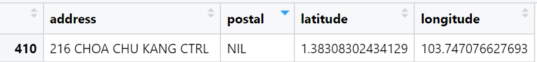

pacman::p_load(sf,spdep,GWmodel,SpatialML,tmap,rsample,Metrics, tidyverse,spatstat, httr, jsonlite, rvest)In-class Exercise 8
Geographically Weighted Predictive Models
The Data
Aspatial dataset:
- HDB Resale data: a list of HDB resale transacted prices in Singapore from Jan 2017 onwards. It is in csv format which can be downloaded from Data.gov.sg.
Installing and Loading R packages
httr: allow R to talk to http
rvest: used to crawl websites, less flexible than the version in python but easy to start with
jsonlite: to communicate with one map API and convert data into dataframe format
Preparing Data
resale <- read_csv("data/aspatial/resale.csv") %>%
filter(month >= "2023-01" & month <= "2024-09")note that the original resale dataset has no postal code, will need to utilise One Map API to do reverse geocoding - returns x, y coordinates for address that is passed through the system
- note that don’t push over too much data i.e. 10,000 as it will take some time to return the results -> push a small number of results i.e. 10, 50 to test the waters. Note that code is available in Javascript or Python.
- note that outputs lat, long is in WGS84 while the xcoord and ycoords are in SVY21.
note that for take-home exercise 3b i.e. proximity to parks, malls - will have to get xcoords and ycoords for those locations too, to determine proximity
we note that there are 47.424 rows of observations as made of several different housing types i.e. 2 room, 3 room, 4 room
Data Wrangling
resale_tidy <- resale %>%
mutate(address = paste(block,street_name)) %>% #combine two columns to obtain address
mutate(remaining_lease_yr = as.integer(
str_sub(remaining_lease, 0, 2)))%>% #find remaining lease in terms of year as the current remaining lease column lease is a mix of xx years yy months, too difficult to use
mutate(remaining_lease_mth = as.integer(
str_sub(remaining_lease, 9, 11))) #find remaining lease in terms of monthsReduce the sample size just for demonstration purposes so that code runs faster:
resale_selected <- resale_tidy %>%
filter(month == "2024-09")There will be addresses with the same street name hence have the code below to create a list of unique addresses - creates a list as API only understands a list:
add_list <- sort(unique(resale_selected$address))Getting postal code via One Map API
The code chunk below creates a function to obtain coordinates:
get_coords <- function(add_list){
# Create a data frame to store all retrieved coordinates
postal_coords <- data.frame()
for (i in add_list){
#print(i)
r <- GET('https://www.onemap.gov.sg/api/common/elastic/search?',
#note that the address allows the passing of several addresses
#note that the above does not use an API key
query=list(searchVal=i,
returnGeom='Y',
getAddrDetails='Y'))
data <- fromJSON(rawToChar(r$content))
found <- data$found
res <- data$results
# Create a new data frame for each address
new_row <- data.frame()
# If single result, append
if (found == 1){
postal <- res$POSTAL
lat <- res$LATITUDE
lng <- res$LONGITUDE
new_row <- data.frame(address= i,
postal = postal,
latitude = lat,
longitude = lng)
## note that can change lat and long to x and y-coords if want the projected coordinate system directly
}
# If multiple results, drop NIL and append top 1
else if (found > 1){
# Remove those with NIL as postal
res_sub <- res[res$POSTAL != "NIL", ]
# Set as NA first if no Postal
if (nrow(res_sub) == 0) {
new_row <- data.frame(address= i,
postal = NA,
latitude = NA,
longitude = NA)
}
else{
top1 <- head(res_sub, n = 1)
postal <- top1$POSTAL
lat <- top1$LATITUDE
lng <- top1$LONGITUDE
new_row <- data.frame(address= i,
postal = postal,
latitude = lat,
longitude = lng)
}
}
else {
new_row <- data.frame(address= i,
postal = NA,
latitude = NA,
longitude = NA)
}
# Add the row
postal_coords <- rbind(postal_coords, new_row)
}
return(postal_coords)
}We obtain the coordinates from add_list:
coords <- get_coords(add_list)We save the coordinates as a new rds file:
write_rds(coords,"data/rds/coords.rds")- Note that one address has a NIL postal code i.e. sometimes it happens if the building is torn down:

but luckily for this case, it has the latitude and longitude values.
- note that postal code is chr field so that the 0, if the first value of the postal code, is retained
Notes from Prof Kam:
take-home exercise 3b
note that Main Upgrading Program (MUP) i.e. upgrading of lifts, is important for HDB unit as price will be adjusted upwards
methods for proximity to different locational factors, can refer to hands-on ex01:
can use straight distance, network distance, direct flying distance
do event counts for number of childcare centres/kindergartens/primary schools
can refer to sf package for more elaborate methods
Notes on Hands-on Exercise 8
Refer to this site: https://isss626-ksm.netlify.app/hands-on_ex/hands-on_ex08/hands-on_ex08